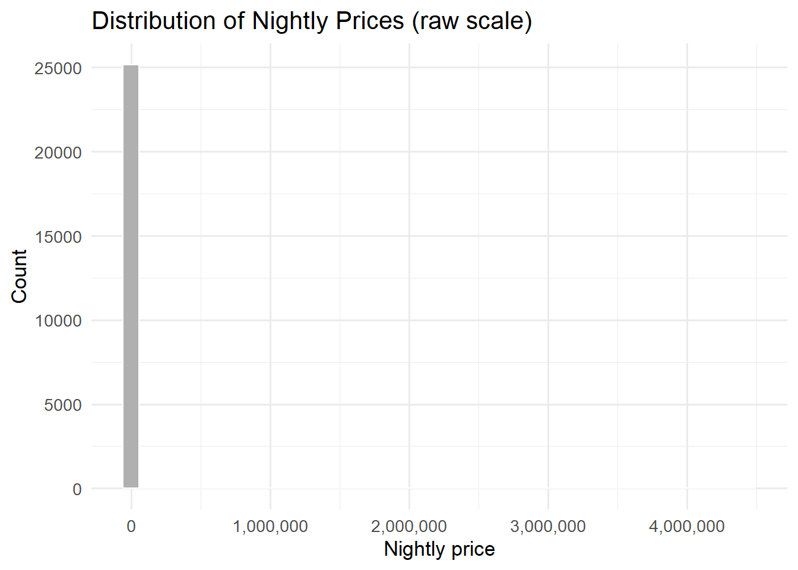
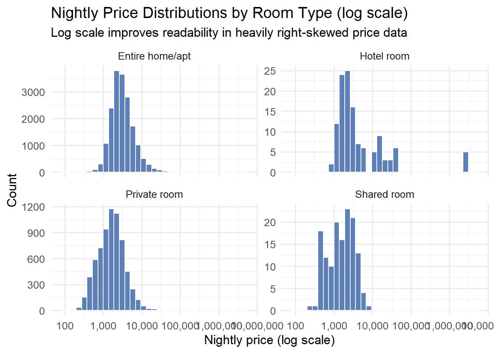

library(dplyr)
library(readr)
library(stringr)
# Example URL (Istanbul). You can get the latest link from Inside Airbnb "Get the Data".
# The URL structure typically follows:
# https://data.insideairbnb.com/turkey/marmara/istanbul/2025-09-29/data/listings.csv.gz
listings_raw <- read_csv(
"listings.csv.gz",
show_col_types = FALSE
)
vars_keep <- c(
"id", "name",
"price", "minimum_nights", "number_of_reviews",
"room_type", "neighbourhood_cleansed"
)
listings_small <- listings_raw %>%
select(any_of(vars_keep))
1 Introduction
Data preprocessing is often presented as a sequence of technical steps. However, each preprocessing decision implicitly embeds a statistical assumption.
In a previous article, I discussed how missing observations can bias analysis if they are ignored or handled improperly:
Handling Missing Data in R: A Comprehensive Guide
This article continues that discussion by focusing on outliers. Unlike missing values, outliers are observed data points. The challenge is not their absence, but their extremeness.
Understanding whether an extreme value is informative or misleading is a crucial step before any modeling effort.
2 Why Outliers Matter
Outliers can affect statistical analysis in several fundamental ways:
- They distort summary statistics such as the mean and standard deviation
- They can dominate parameter estimates in regression models
- They influence distance-based methods such as clustering
More importantly, outliers force analysts to confront a key question:
Are we observing rare but valid behavior, or a deviation from the assumed data-generating process?
3 What Is an Outlier?
Informally, an outlier is an observation that appears unusually large or small relative to the rest of the data. Formally, an outlier is an observation that is inconsistent with the bulk of the data under a given statistical model. Outliers are therefore not absolute objects. They depend on assumptions about distribution, scale, and structure.
4 The Dataset: Inside Airbnb Listings (Istanbul)
To demonstrate outlier detection methods, we will use Inside Airbnb listings data. Inside Airbnb is a mission-driven project that publishes datasets scraped from publicly available Airbnb listing pages and provides city-level downloads for research and analysis.
In this article, we will work with the detailed listings file:
listings.csv.gz(detailed listing-level data; typically rich and feature-complete)
You can download the dataset from the Inside Airbnb “Get the Data” page (choose a city and download Detailed Listings data).
4.1 Why this dataset is ideal for outlier detection
Unlike many “clean” educational datasets, Airbnb listing data often contains genuinely extreme values, especially in price. These extremes are not necessarily errors—luxury properties exist—but they can heavily distort means, variances, and model estimates. That makes Airbnb listings a realistic and highly instructive dataset for outlier detection.
4.2 Variables we will use
Although the Airbnb listings dataset contains many variables, this article focuses on a small, purpose-driven subset.
Our primary variable of interest is:
price(converted toprice_num): nightly listing price.
This variable is typically right-skewed and often contains extreme values, making it ideal for illustrating outlier detection methods.
To provide context for interpreting extreme prices, we also retain a limited number of supporting variables:
minimum_nights: minimum stay requirement, which can occasionally take unusually large valuesnumber_of_reviews: a proxy for listing activity and popularity, often zero-inflatedroom_type: categorical variable indicating the type of accommodationneighbourhood_cleansed: cleaned neighborhood label, useful for geographic context
These additional variables are not used to detect outliers directly, but to interpret and explain them once identified.
4.3 Loading the data in R
Below is an example using Istanbul. If you prefer a different city, replace the URL with the corresponding listings.csv.gz link from Inside Airbnb.
4.4 Inspecting the selected variables
Before performing any transformation, it is important to inspect the data as it comes from the source. This allows us to understand variable types and identify potential issues early.
Below, we examine only the variables selected for this article.
glimpse(listings_small)Rows: 30,051
Columns: 7
$ id <dbl> 1.342043e+18, 1.342082e+18, 1.342211e+18, 1.342…
$ name <chr> "Отдельная квартира на Фатих(Балат).", "Blue st…
$ price <chr> "$2,290.00", "$1,101.00", "$3,430.00", "$3,178.…
$ minimum_nights <dbl> 5, 7, 2, 100, 1, 100, 1, 5, 2, 100, 100, 2, 100…
$ number_of_reviews <dbl> 4, 4, 26, 1, 2, 0, 41, 0, 19, 0, 0, 26, 0, 0, 1…
$ room_type <chr> "Entire home/apt", "Private room", "Entire home…
$ neighbourhood_cleansed <chr> "Fatih", "Beyoglu", "Beyoglu", "Sisli", "Sisli"…At this stage, notice in particular the price variable. Although it represents a numerical concept (nightly price), it is not stored as a numeric variable.
Instead, price is typically read as a character string, often containing currency symbols and separators. This is common in datasets that originate from web scraping or user-facing platforms.
4.5 Why we need to convert price to numeric
Outlier detection methods such as boxplots, the IQR rule, and Z-scores require numeric input. As long as price is stored as a character variable, it cannot be used in quantitative analysis.
More importantly, treating price as numeric is not just a technical requirement. It reflects a modeling decision: we explicitly state that this variable represents a measurable quantity on which arithmetic operations are meaningful.
4.6 Converting price to a numeric variable
To prepare the data for analysis, we remove non-numeric characters and convert price to a numeric variable, which we call price_num.
listings_small <- listings_small %>%
mutate(price_num = price %>%
str_replace_all("[^0-9.]", "") %>%
as.numeric())After the conversion, we can verify the result by inspecting basic summaries:
summary(listings_small$price_num) Min. 1st Qu. Median Mean 3rd Qu. Max. NA's
80 1644 2538 5084 4108 4437598 4803 At this point, price_num is ready for outlier detection and visualization. In the next section, we will use this variable to illustrate how extreme values can be identified using visual tools and formal statistical rules.
5 Visualizing Price Distributions and Potential Outliers
Before applying any formal outlier detection rule, it is good practice to explore the distribution of the variable visually. Visualization helps us understand the shape, spread, and asymmetry of the data, and often reveals extreme values immediately.
In this section, we focus on the numeric price variable price_num.
5.1 A first attempt: why the raw histogram fails
A natural first step is to plot a histogram of nightly prices on the original scale.
library(ggplot2)
library(scales)
ggplot(listings_small, aes(x = price_num)) +
geom_histogram(bins = 40, fill = "#B0B0B0", color = "white") +
scale_x_continuous(labels = label_number(big.mark = ",")) +
labs(
title = "Distribution of Nightly Prices (raw scale)",
x = "Nightly price",
y = "Count"
) +
theme_minimal(base_size = 13)
Interpretation
This plot is technically correct, but analytically unhelpful.
A small number of extremely expensive listings stretches the x-axis.
The majority of observations are compressed near zero.
As a result, the internal structure of the data becomes almost invisible.
This is not a plotting mistake. It is a direct consequence of heavy right-skewness, which is common in price data. At this point, it is already clear that naive visualizations on the raw scale are insufficient.
5.2 Adding context: prices depend on room_type
Airbnb listings are not drawn from a single homogeneous market. A shared room and an entire home/apt represent fundamentally different accommodation types, and their prices should not be expected to follow the same distribution.
If we ignore this context and search for outliers globally, we risk labeling valid group-level differences as anomalies. For this reason, we first examine how prices behave within each room type.
listings_small %>%
count(room_type, sort = TRUE)# A tibble: 4 × 2
room_type n
<chr> <int>
1 Entire home/apt 20243
2 Private room 9494
3 Hotel room 157
4 Shared room 1575.3 Price distributions by room type (log scale)
To make the right tail interpretable without discarding extreme values, we visualize prices on a logarithmic scale and separate distributions by room type.
ggplot(listings_small, aes(x = price_num)) +
geom_histogram(bins = 35, fill = "#4C72B0", color = "white", alpha = 0.9) +
scale_x_log10(
breaks = log_breaks(n = 6),
labels = label_number(big.mark = ",")
) +
facet_wrap(~ room_type, scales = "free_y") +
labs(
title = "Nightly Price Distributions by Room Type (log scale)",
subtitle = "Log scale improves readability in heavily right-skewed price data",
x = "Nightly price (log scale)",
y = "Count"
) +
theme_minimal(base_size = 13)
Interpretation
This visualization reveals several important patterns:
Each room type has its own characteristic price range.
The extreme right tail becomes visible without overwhelming the plot.
What appears as an “outlier” globally may be perfectly typical within a given room type
At this stage, the notion of an outlier becomes context-dependent rather than absolute.
5.4 Boxplots by room type: highlighting potential extremes
Histograms show overall shape, but boxplots are better suited for highlighting extreme observations. We again use a log scale to preserve readability.
ggplot(listings_small, aes(x = room_type, y = price_num)) +
geom_boxplot(outlier.alpha = 0.35, fill = "#DDDDDD") +
scale_y_log10(labels = label_number(big.mark = ",")) +
labs(
title = "Nightly Prices by Room Type (boxplot, log scale)",
subtitle = "Potential outliers are assessed within each room type",
x = "Room type",
y = "Nightly price (log scale)"
) +
theme_minimal(base_size = 13) +
theme(axis.text.x = element_text(angle = 20, hjust = 1))
Interpretation
This plot makes a key point explicit:
Outliers are flagged relative to their own room type, not the entire dataset.
Extremely high prices within shared rooms are statistically more unusual than similarly high prices within entire homes, given the much narrower price distribution of shared rooms.
Statistical outliers are candidates for further investigation, not automatic deletions.
5.5 What visual exploration tells us
From visual inspection alone, we can conclude that:
Airbnb price data are highly right-skewed.
Extreme values exist and strongly influence scale and summaries.
Context (here,
room_type) is essential for meaningful interpretation.
These observations motivate the next step: formalizing outlier detection using statistical rules such as the IQR method and Z-scores, applied within room types rather than globally.
6 Formal Outlier Detection Within Room Type
Visual exploration suggested that nightly prices exhibit strong right-skewness and that extreme values should be interpreted within the context of room_type. In this section, we formalize that intuition using statistical outlier detection rules.
Our goal is not to mechanically remove observations, but to identify and examine listings whose prices are unusually high relative to their own room type.
6.1 The IQR rule
The Interquartile Range (IQR) rule defines outliers based on the spread of the middle 50% of the data. For a given variable, the IQR is defined as:
\[ \text{IQR} = Q_3 - Q_1 \]
An observation is flagged as a potential outlier if it lies outside the interval:
\[ [ Q_1 - 1.5 \times \text{IQR}, \; Q_3 + 1.5 \times \text{IQR} ] \]
Because the IQR relies on quantiles rather than the mean and standard deviation, it is relatively robust to skewed distributions—an important property for price data.
6.2 Applying the IQR rule within each room type
Instead of computing a single global IQR, we apply the rule separately within each room type. This ensures that prices are evaluated relative to comparable listings.
outliers_iqr <- listings_small %>%
group_by(room_type) %>%
mutate(
Q1 = quantile(price_num, 0.25, na.rm = TRUE),
Q3 = quantile(price_num, 0.75, na.rm = TRUE),
IQR_value = Q3 - Q1,
lower_bound = Q1 - 1.5 * IQR_value,
upper_bound = Q3 + 1.5 * IQR_value,
outlier_iqr = price_num < lower_bound | price_num > upper_bound
) %>%
ungroup()At this stage, each listing is labeled according to whether its price is considered an outlier within its own room type.
6.3 How many outliers do we detect?
Before inspecting individual listings, it is informative to summarize how many outliers are flagged in each group.
outliers_iqr %>%
count(room_type, outlier_iqr) %>%
arrange(room_type, desc(outlier_iqr))# A tibble: 12 × 3
room_type outlier_iqr n
<chr> <lgl> <int>
1 Entire home/apt TRUE 1458
2 Entire home/apt FALSE 16616
3 Entire home/apt NA 2169
4 Hotel room TRUE 17
5 Hotel room FALSE 106
6 Hotel room NA 34
7 Private room TRUE 441
8 Private room FALSE 6470
9 Private room NA 2583
10 Shared room TRUE 3
11 Shared room FALSE 137
12 Shared room NA 17Interpretation
This table shows that outliers are not evenly distributed across room types. Some categories naturally exhibit greater price dispersion, which leads to more listings being flagged as potential outliers. This reinforces the importance of group-aware detection.
6.4 Inspecting extreme cases flagged by IQR
Statistical flags become meaningful only when we inspect the actual observations. Below, we list the most expensive listings flagged as outliers within each room type.
top_price_outliers <- outliers_iqr %>%
filter(outlier_iqr) %>%
group_by(room_type) %>%
arrange(desc(price_num)) %>%
slice_head(n = 5) %>%
ungroup() %>%
select(
room_type,
price,
price_num,
minimum_nights,
number_of_reviews,
neighbourhood_cleansed,
name
)
top_price_outliers# A tibble: 18 × 7
room_type price price_num minimum_nights number_of_reviews
<chr> <chr> <dbl> <dbl> <dbl>
1 Entire home/apt $4,437,598.00 4437598 100 14
2 Entire home/apt $2,658,600.00 2658600 100 3
3 Entire home/apt $2,109,690.00 2109690 100 0
4 Entire home/apt $2,000,000.00 2000000 100 0
5 Entire home/apt $1,250,008.00 1250008 100 0
6 Hotel room $2,439,497.00 2439497 1 0
7 Hotel room $2,439,497.00 2439497 1 0
8 Hotel room $2,439,497.00 2439497 1 0
9 Hotel room $2,439,497.00 2439497 1 0
10 Hotel room $2,433,427.00 2433427 1 0
11 Private room $390,271.00 390271 365 1
12 Private room $390,271.00 390271 365 0
13 Private room $390,271.00 390271 365 0
14 Private room $390,271.00 390271 100 0
15 Private room $390,271.00 390271 100 0
16 Shared room $7,221.00 7221 1 0
17 Shared room $6,086.00 6086 1 2
18 Shared room $5,841.00 5841 100 0
# ℹ 2 more variables: neighbourhood_cleansed <chr>, name <chr>Interpretation
At this point, the analysis moves from abstract rules to concrete questions:
Are these listings luxury properties?
Do they require unusually long minimum stays?
Do they have very few (or no) reviews, suggesting new or inactive listings?
Are they located in specific neighborhoods?
The answers to these questions determine whether a flagged observation should be:
kept and modeled explicitly,
transformed (e.g., via log scaling),
or excluded due to data quality concerns.
6.5 Z-score–based outlier detection: concept and limitations
In addition to IQR-based rules, outliers are often discussed using Z-scores. Because this method is widely taught and frequently applied, it is important to understand both how it works and when it can be misleading.
6.5.1 What is a Z-score?
A Z-score measures how far an observation lies from the mean, expressed in units of standard deviation. For a single observation, the Z-score is defined as:
\[ z = \frac{x - \mu}{\sigma} \]
where:
- \(\mu\) is the sample mean
- \(\sigma\) is the sample standard deviation
Intuitively, the Z-score answers the question:
“How many standard deviations away from the mean is this observation?”
A common heuristic labels observations with
\[ |z| > 3 \]
as potential outliers.
6.5.2 What does the Z-score assume?
Z-score–based detection implicitly relies on several assumptions:
- the distribution is approximately symmetric,
- the mean and standard deviation are meaningful summaries,
- extreme values do not dominate the estimation of \(\mu\) and \(\sigma\).
These assumptions are often reasonable for approximately normal data, but they are problematic for strongly skewed distributions.
6.5.3 Why Z-scores are problematic for price data
Airbnb prices are typically right-skewed with long upper tails. In such cases:
- extreme values inflate the mean,
- extreme values inflate the standard deviation,
- as a result, truly extreme observations may receive moderate Z-scores.
This leads to a paradox: the very observations we want to detect reduce their own apparent extremeness. For this reason, Z-scores tend to under-detect outliers in heavily skewed economic data.
6.5.4 Applying Z-scores within each room type
Despite these limitations, Z-scores can still be informative when used carefully and comparatively. As with the IQR rule, we compute Z-scores within each room type to preserve contextual meaning.
outliers_z <- listings_small %>%
group_by(room_type) %>%
mutate(
mean_price = mean(price_num, na.rm = TRUE),
sd_price = sd(price_num, na.rm = TRUE),
z_price = (price_num - mean_price) / sd_price,
outlier_z = abs(z_price) > 3
) %>%
ungroup()6.5.5 How many outliers are flagged by the Z-score rule?
After computing Z-scores within each room type, we can summarize how many listings are flagged as outliers.
outliers_z %>%
count(room_type, outlier_z) %>%
arrange(room_type, desc(outlier_z))# A tibble: 12 × 3
room_type outlier_z n
<chr> <lgl> <int>
1 Entire home/apt TRUE 24
2 Entire home/apt FALSE 18050
3 Entire home/apt NA 2169
4 Hotel room TRUE 5
5 Hotel room FALSE 118
6 Hotel room NA 34
7 Private room TRUE 26
8 Private room FALSE 6885
9 Private room NA 2583
10 Shared room TRUE 1
11 Shared room FALSE 139
12 Shared room NA 17Interpretation
In many Airbnb datasets, this table reveals a striking pattern:
The number of Z-score–based outliers is much smaller than the number detected by the IQR rule.
In some room types, no observations are flagged at all.
This is a direct consequence of right-skewness: extreme prices inflate both the mean and the standard deviation, making Z-scores appear less extreme than expected.
6.5.6 Inspecting listings flagged by Z-scores
To understand what Z-scores actually flag as outliers, we inspect the most extreme listings according to their Z-score values.
top_z_outliers <- outliers_z %>%
filter(outlier_z) %>%
group_by(room_type) %>%
arrange(desc(abs(z_price))) %>%
slice_head(n = 5) %>%
ungroup() %>%
select(
room_type,
price,
price_num,
z_price,
minimum_nights,
number_of_reviews,
neighbourhood_cleansed,
name
)
top_z_outliers# A tibble: 16 × 8
room_type price price_num z_price minimum_nights number_of_reviews
<chr> <chr> <dbl> <dbl> <dbl> <dbl>
1 Entire home/apt $4,437,59… 4437598 92.9 100 14
2 Entire home/apt $2,658,60… 2658600 55.6 100 3
3 Entire home/apt $2,109,69… 2109690 44.1 100 0
4 Entire home/apt $2,000,00… 2000000 41.8 100 0
5 Entire home/apt $1,250,00… 1250008 26.1 100 0
6 Hotel room $2,439,49… 2439497 4.84 1 0
7 Hotel room $2,439,49… 2439497 4.84 1 0
8 Hotel room $2,439,49… 2439497 4.84 1 0
9 Hotel room $2,439,49… 2439497 4.84 1 0
10 Hotel room $2,433,42… 2433427 4.83 1 0
11 Private room $390,271.… 390271 31.3 365 1
12 Private room $390,271.… 390271 31.3 365 0
13 Private room $390,271.… 390271 31.3 365 0
14 Private room $390,271.… 390271 31.3 100 0
15 Private room $390,271.… 390271 31.3 100 0
16 Shared room $7,221.00 7221 3.65 1 0
# ℹ 2 more variables: neighbourhood_cleansed <chr>, name <chr>Interpretation
When compared to the IQR-based outliers, these listings are often:
less extreme in absolute price,
closer to the central mass of the distribution,
dominated by a small number of room types.
This confirms that Z-score–based detection tends to miss many extreme but valid prices in heavily skewed data.
6.5.7 Comparing IQR and Z-score results
Finally, we compare how many listings are flagged by each method.
comparison_summary <- outliers_iqr %>%
select(id, room_type, outlier_iqr) %>%
left_join(
outliers_z %>% select(id, outlier_z),
by = "id"
) %>%
count(outlier_iqr, outlier_z)
comparison_summary# A tibble: 4 × 3
outlier_iqr outlier_z n
<lgl> <lgl> <int>
1 FALSE FALSE 23329
2 TRUE FALSE 1863
3 TRUE TRUE 56
4 NA NA 4803Interpretation
This comparison highlights a key methodological insight:
Many listings flagged by the IQR rule are not flagged by Z-scores.
Listings flagged by Z-scores are almost always flagged by the IQR rule as well.
The overlap is asymmetric.
In other words, the Z-score rule is more conservative and may under-detect outliers when distributions are strongly skewed. This does not make Z-scores “wrong”, but it does limit their usefulness as a primary detection method for price data.
In practice, Z-score–based flags often differ substantially from IQR-based flags. This difference is not an error—it reflects different assumptions.
IQR-based methods rely on ranks and quantiles
Z-score–based methods rely on moments (mean and variance)
For heavily skewed price data, IQR-based detection is usually more reliable, while Z-scores should be interpreted as a supplementary diagnostic rather than a primary rule.
7 Should Outliers Be Removed?
Detecting outliers does not imply that they should be automatically removed. Outlier detection is a diagnostic step, not a cleaning instruction.
In the context of Airbnb price data, many extreme values correspond to luxury properties, large homes, or special accommodation types. Blindly removing such observations may erase precisely the information that makes the data interesting.
Instead, several alternative strategies should be considered.
7.1 Verify and understand the source of extremeness
The first question should always be why an observation is extreme.
- Is the listing a luxury property?
- Does it belong to a specific
room_type? - Is it located in a high-demand neighborhood?
- Is it associated with unusual booking constraints (e.g., very high
minimum_nights)?
In many cases, extreme values are valid reflections of heterogeneity, not data errors.
7.2 Use transformations or robust methods
When extreme values distort summaries or model estimates, removal is not the only option.
Common alternatives include:
- transforming the response variable (e.g., log transformation of prices),
- using robust estimators that reduce sensitivity to extremes,
- modeling medians or quantiles instead of means.
These approaches preserve information while reducing the influence of extreme observations.
7.3 Model extremes explicitly when relevant
In some applications, outliers are not nuisances but the primary object of interest.
Examples include:
- luxury market analysis,
- risk assessment,
- rare but high-impact events.
In such cases, extreme observations should be modeled explicitly rather than suppressed.
7.4 A final perspective
Outliers are not merely statistical inconveniences. They often highlight structural differences, market segmentation, or meaningful departures from typical behavior.
Understanding why an observation is extreme is frequently more informative than deleting it.
In practice, thoughtful outlier handling requires a balance between statistical rules, domain knowledge, and modeling objectives.
8 Final Remarks
Outlier detection is a natural step in the data preprocessing workflow. It typically follows missing data analysis and precedes scaling, transformation, or model fitting.
In this article, the focus was not on eliminating extreme values, but on understanding why they occur. Through visual exploration, context-aware analysis using room_type, and formal detection rules such as the IQR method and Z-scores, we demonstrated that extreme values are not noise by default.
In many real-world datasets, especially those involving prices or economic behavior, extreme values reflect structural heterogeneity rather than data quality issues. Treating them blindly as errors risks discarding meaningful information.
Outliers should therefore be approached as questions posed by the data: Why is this observation extreme? Does it represent a different regime, a rare event, or a distinct subgroup?
Answering these questions requires a combination of statistical tools, domain knowledge, and clear analytical goals. When handled thoughtfully, outlier analysis enhances both the robustness and the interpretability of downstream models.
9 References and Further Reading
Tukey, J. W. (1977). Exploratory Data Analysis. Addison-Wesley.
(Foundational reference for boxplots, IQR, and exploratory thinking.)Hastie, T., Tibshirani, R., Friedman, J. (2009). The Elements of Statistical Learning. Springer.
(Statistical foundations and the role of robust methods in modeling.)James, G., Witten, D., Hastie, T., Tibshirani, R. (2021). An Introduction to Statistical Learning. Springer.
(Accessible discussion of preprocessing, transformations, and practical modeling considerations.)NIST/SEMATECH e-Handbook of Statistical Methods – Outliers
https://www.itl.nist.gov/div898/handbook/eda/section3/eda35h.htm
(Authoritative overview of outlier concepts and detection methods.)Wickham, H., Grolemund, G. (2017). R for Data Science. O’Reilly Media.
(Practical guidance on data exploration, visualization, and preprocessing workflows in R.)Inside Airbnb – Get the Data
https://insideairbnb.com/get-the-data/
(Data source used in this article; city-level Airbnb listings data.)Wickham, H. (2016). ggplot2: Elegant Graphics for Data Analysis. Springer.
(Principles of layered graphics and effective visualization used throughout the article.)